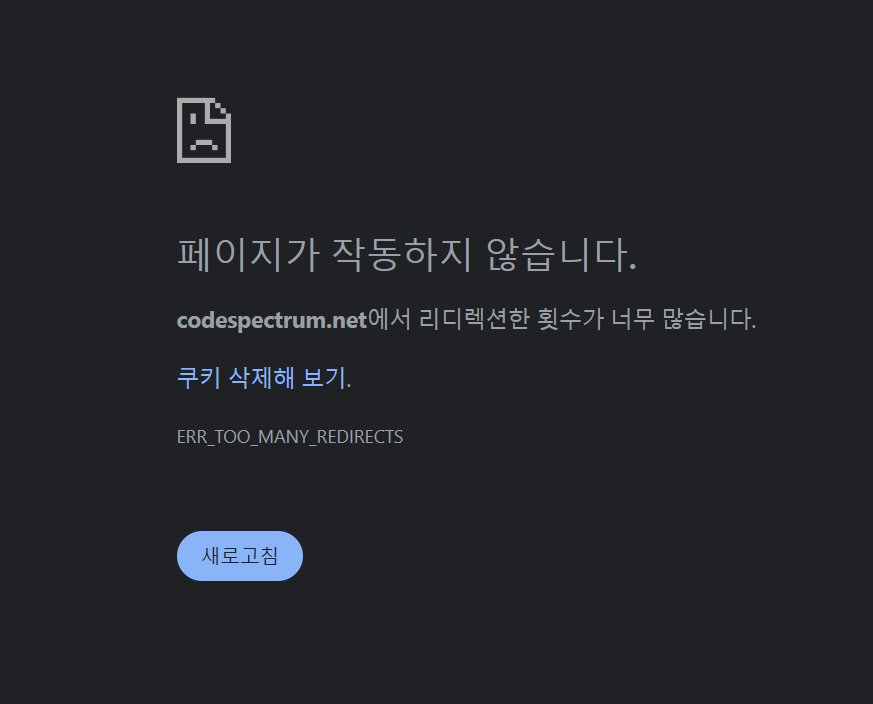
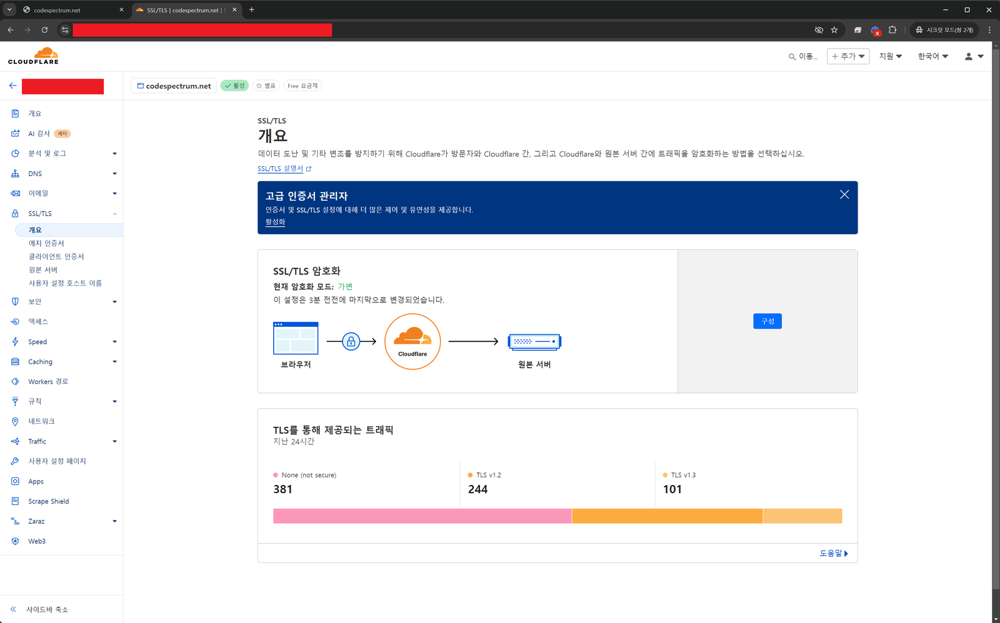
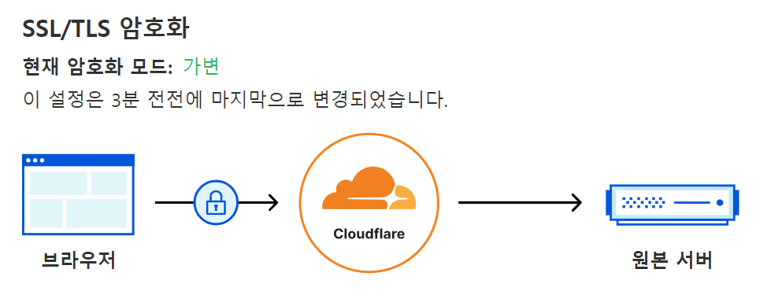
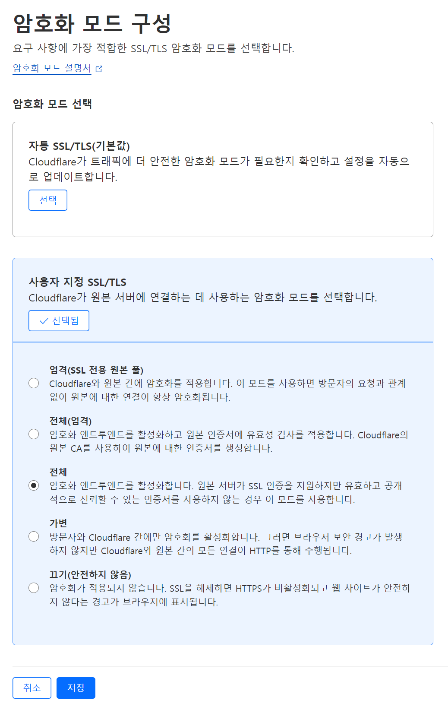
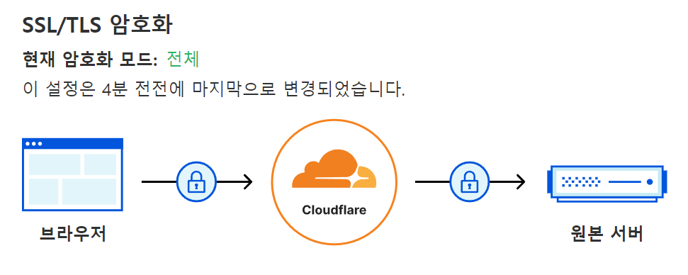
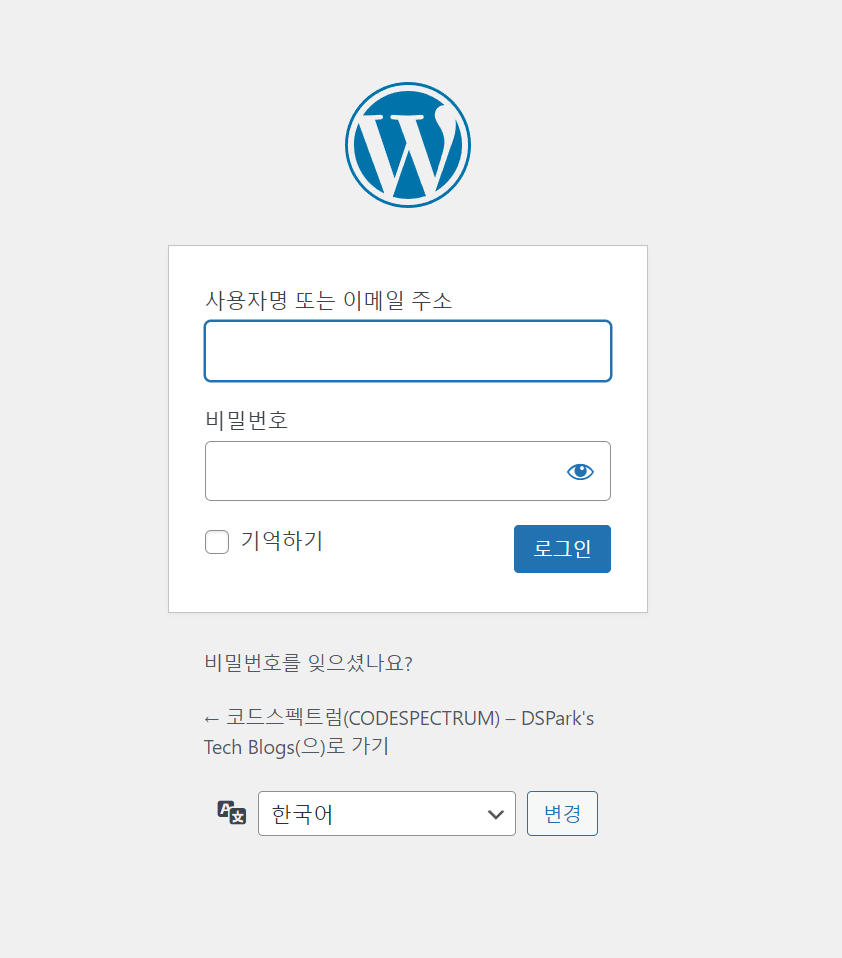

[WordPress] Cloudflare 적용 후 ERR_TOO_MANY_REDIRECTS 초간단 해결방법
스팸 댓글 때문에 Cloudflare를 적용했더니 로그인에서 ERR_TOO_MANY_REDIRECTS가 났다. 원인은 SSL 가변 모드에서 생기는 https와 http 사이의 루프 — 암호화 모드를 '전체'로 바꿔 해결한다.
최근 스팸 댓글이 매우 많이 증가하여 Cloudflare를 적용하였습니다.
그런데!!

로그인을 하려니 ERR_TOO_MANY_REDIRECTS 에러가 발생하네요..
검색을 조금 해보니 Nginx를 수정하라느니 .htaccess를 수정하라는둥.. 각종 해결법이 등장합니다.
원인을 알아보니 웹서비스가 https와 http 사이에서 서로에게 반복해 전달하며 루프에 빠져 발생하는 현상입니다.
원래는 안그랬는데 왜 Cloudflare(클라우드플레어) 적용 후 이런 현상이 발생했을까요?


Cloudflare(클라우드플레어) 대시보드에서 SSL 설정메뉴로 들어갔더니 기본 셋팅이 SSL 가변으로 설정되어 있습니다.
사용자와 클라우드 플레어 사이에는 SSL(https)로 통신하나 Cloudflare와 원본서버(내 호스팅 서버)간에는 http로 통신합니다.
딱봐도 여기가 문제같습니다.. 설정을 바꿔봅시다. 위 화면의 오른쪽 구성버튼을 클릭합니다.

전체로 놓고 저장합니다.

이제 전체구간을 https로만 통신합니다. 과연 해결되었을까요?

짠!! 잘 동작합니다^^
다음 글
워드프레스 멀티도메인 사용 설정하기 / WordPress using Multi-domain with Single-site
워드프레스 사이트 하나에 도메인 여러 개를 연결하면 메인 도메인을 제외한 나머지에서는 이미지가 엑스박스로 뜬다. 리다이렉션 없이 각 도메인이 개별적으로 정상 작동하게 만드는 wp-config.php 설정.
윈도우11 우클릭 시 “추가옵션보기”를 기본으로 설정하기
윈도우11의 간소화된 우클릭 메뉴 대신 예전 전체 메뉴(추가 옵션 보기)가 바로 뜨도록 레지스트리를 등록하는 명령어와, 원래대로 되돌리는 명령어.